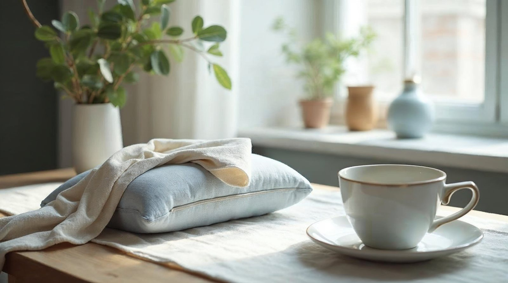
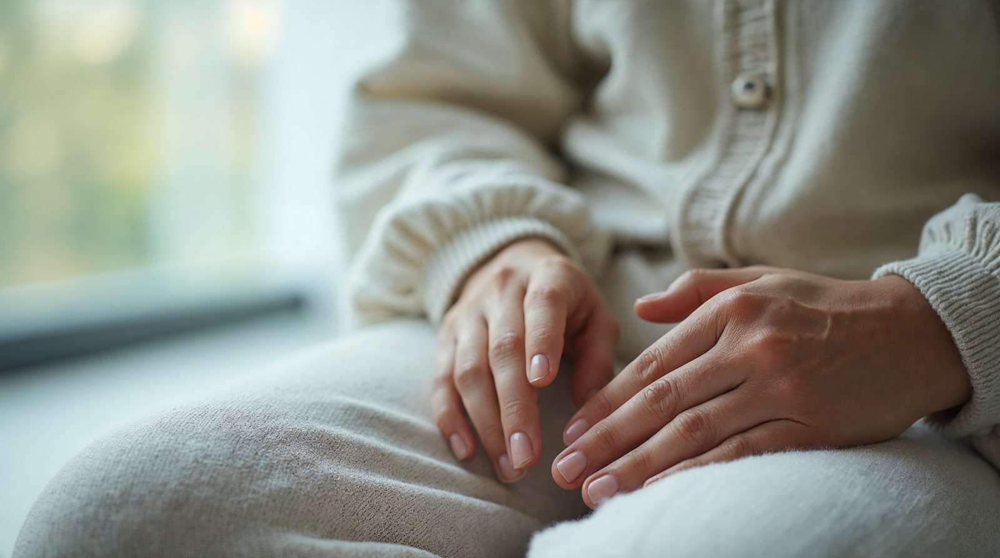
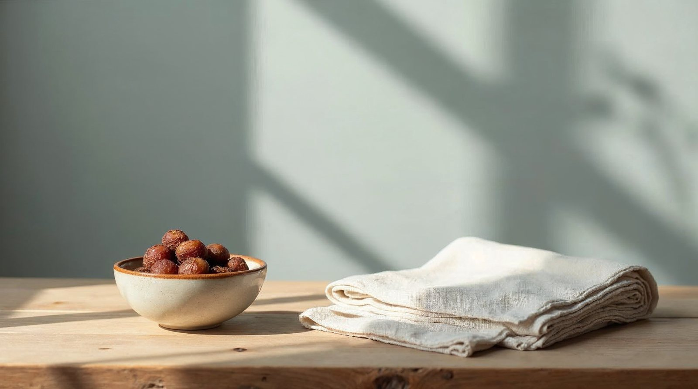

이종호 한의사 감수좋은꿈참사랑한의원 대표원장 (한의사 면허번호 19769)발행 2026-11-23 · 수정 2026-11-26
이 글의 차례
- 왜 맥을 살피나요
- 왜 하필 손목에서 맥을 짚나요?
- 진맥이 특히 쓸모 있는 때는 언제인가요?
- 손끝으로 느끼는 맥의 특징은 무엇인가요?
- 맥은 왜 날마다 조금씩 다르게 느껴지나요?
- 진맥을 받을 때는 이렇게 하시면 편합니다
- 자주 하는 오해
- 예를 들면 이런 경우입니다
- 먼저 이렇게 여쭙니다
- 일상에서 먼저 해 볼 수 있는 것
- 한의원에서 함께 살필 수 있는 경우
- 맥과 증상이 엇갈릴 때는 어떻게 보나요?
- 다시 오셨을 때 맥을 이어서 보는 이유
- 계절과 나이에 따라 맥은 어떻게 다르게 느껴지나요?
- 진맥을 받고 나서 들으시는 이야기
- 진맥과 숫자로 재는 검사는 어떻게 함께 보나요
- 스스로 점검해 보세요
- 이렇게 기록해 오시면 상담이 쉬워집니다
- 이런 증상은 먼저 확인이 필요합니다
- 관련 글
진맥은 손목 안쪽의 맥박에 손가락 세 개를 대고 빠르기, 세기, 리듬 같은 특징을 손끝으로 느껴 몸의 전체적인 경향을 살피는 한의학의 진찰 방법입니다. 아프지 않고 시간도 길지 않습니다. 병명을 정하는 검사라기보다 문진에서 들은 이야기와 맞춰 보는 참고 자료입니다.
왜 맥을 살피나요
- 같은 피로나 두근거림이라도 맥이 빠른지, 약한지, 고르지 않은지에 따라 살펴볼 방향이 달라질 수 있다고 한의학에서는 봅니다.
- 양쪽 손목을 비교하면 몸의 균형을 가늠하는 단서를 얻을 수 있다고 봅니다.
- 진료가 이어질 때 맥의 변화를 함께 보면 몸 상태의 흐름을 이야기하기 쉬워집니다.
- 다만 숫자로 재는 검사가 아니라 손끝으로 느끼는 부분이 있어 한계도 있습니다.
왜 하필 손목에서 맥을 짚나요?
손목 안쪽 엄지 쪽에는 혈관이 피부 가까이 지나가서 손끝으로 맥박을 또렷하게 느낄 수 있습니다. 앉은 채로 팔만 내밀면 되니 짚는 사람도 받는 분도 편합니다.
한의학에서는 이 자리를 손목 쪽부터 세 부분으로 나눠 검지, 중지, 약지를 하나씩 대고, 부위마다 느낌이 어떻게 다른지를 살핍니다. 세 자리를 몸의 여러 부분과 이어 보는 해석도 전해 오지만, 저는 이것을 단정하는 근거로 쓰지 않고 질문을 넓히는 실마리로만 씁니다.
진맥이 특히 쓸모 있는 때는 언제인가요?
- 검사에서는 특별한 이상이 없다는데 피로와 무거움이 이어질 때, 몸 전체의 리듬을 함께 살피는 실마리가 됩니다.
- 통증으로 오셨지만 잠과 소화도 함께 흔들릴 때, 통증 뒤의 몸 상태를 가늠해 볼 수 있습니다.
- 한약 상담을 할 때, 말씀해 주신 증상과 맥을 함께 놓고 방향을 정하는 데 참고합니다.
- 치료와 생활 변화를 이어 갈 때, 지난번 맥과 비교하며 흐름을 이야기할 수 있습니다.
반대로 병이 있는지 없는지를 가려야 할 때는 진맥만으로 판단하지 않고 필요한 검사와 진료를 함께 권합니다.
손끝으로 느끼는 맥의 특징은 무엇인가요?
맥을 짚을 때 저는 맥박이 몇 번 뛰는지만 세지 않습니다. 손가락 세 개를 손목에 나란히 대고 살짝 눌렀다가 깊이 눌렀다가 하면서 여러 가지를 함께 느껴 봅니다.
- 깊이: 가볍게 대기만 해도 느껴지는지, 꾹 눌러야 잡히는지를 봅니다.
- 빠르기: 숨 한 번 쉬는 동안 몇 번쯤 뛰는지, 평소보다 빠른지 느린지를 봅니다.
- 힘: 손끝을 밀어내는 힘이 단단한지, 가늘고 약한지를 봅니다.
- 모양: 매끄럽게 굴러가듯 오는지, 팽팽한 줄처럼 느껴지는지를 봅니다.
- 리듬: 일정하게 이어지는지, 중간에 고르지 않은 박자가 섞이는지를 봅니다.
- 좌우 차이: 양쪽 손목의 힘과 깊이가 비슷한지 다른지를 비교합니다.
한의학에서는 이런 특징을 묶어 몸이 찬 쪽인지 열감 쪽인지, 기운이 넉넉한지 처져 있는지를 가늠하는 단서로 씁니다. 다만 이것은 말씀해 주신 증상과 함께 놓을 때 의미가 생깁니다.
맥은 왜 날마다 조금씩 다르게 느껴지나요?
맥은 그날의 몸 상태를 그대로 따라 움직입니다. 잠을 설친 날, 식사를 거른 날, 마음이 바빴던 날에는 같은 사람의 맥도 다르게 느껴집니다.
예를 들어 야근 뒤 서너 시간밖에 못 주무신 날에는 맥이 들뜨고 빠르게 느껴지기 쉽고, 감기 기운이 있는 날에는 맥이 위로 떠 있는 듯 느껴지기도 합니다. 여성분은 생리 주기에 따라, 누구나 계절에 따라서도 맥의 느낌이 조금씩 달라집니다.
그래서 저는 한 번 짚은 맥으로 몸 상태를 고정해 말씀드리지 않습니다. 그날의 맥은 그날의 생활과 함께 읽고, 여러 번의 맥을 이어 보며 흐름을 이야기합니다.
진맥을 받을 때는 이렇게 하시면 편합니다
- 손목을 책상 위에 올리고 손바닥이 위를 보게 두시면 됩니다.
- 팔과 손가락에 힘을 빼고, 주먹을 쥐지 않습니다.
- 손목시계, 팔찌, 꽉 끼는 소매는 미리 풀거나 걷어 두시면 좋습니다.
- 짚는 동안에는 편하게 숨 쉬시면 되고, 다리를 꼬지 않고 앉으시면 좋습니다.
- 손이 많이 차가우면 말씀해 주세요. 잠시 녹인 뒤 짚기도 합니다.
진맥은 바늘이나 기구를 쓰지 않고 손끝만 대는 진찰이라 불편함이 거의 없습니다. 짚는 동안 궁금한 점이 있으면 편하게 물어보셔도 됩니다.
자주 하는 오해
- 맥만 짚으면 병명을 알 수 있다고 여기기 쉽지만, 진맥은 문진과 다른 진찰을 함께 놓고 보는 참고 자료입니다.
- 통증으로 왔으니 맥은 상관없다고 생각하기 쉽지만, 좋은꿈참사랑한의원에서는 통증으로 오신 분께도 진맥을 짚습니다.
- 스마트워치 심박수가 정상이면 진맥이 필요 없다고 여기기 쉽지만, 진맥은 빠르기뿐 아니라 맥의 힘과 깊이, 고른 정도를 함께 느껴 봅니다.
- 한 번 짚은 맥이 늘 같다고 생각하기 쉽지만, 잠과 식사, 긴장에 따라 그날그날 달라질 수 있어 매번 다시 짚습니다.

예를 들면 이런 경우입니다
- 예를 들어 야근이 이어져 쉽게 지치는 직장인이라면, 맥과 함께 최근 몇 주의 잠든 시각과 식사 시간을 여쭤 생활 리듬을 같이 살핍니다.
- 예를 들어 시험을 앞두고 가슴이 자주 두근거린다는 수험생이라면, 맥을 짚으며 두근거림이 생기는 시간대와 카페인 섭취를 함께 여쭙습니다.
- 예를 들어 혈압약을 드시는 어르신이라면, 맥을 짚으며 약 이름과 오늘 드신 시각을 여쭙고 그 점을 감안해서 맥을 읽습니다.
먼저 이렇게 여쭙니다
- 쉽게 피곤하고 몸이 무겁다고 느끼나요?
- 가슴이 두근거리는 때가 있나요? 언제, 어떤 상황에서인가요?
- 손발이 차거나 열감이 있나요?
- 오시기 직전에 급하게 걸었거나 커피를 드셨나요?
- 심장 질환이 있거나 혈압약을 드시나요?

일상에서 먼저 해 볼 수 있는 것
- 진료 전 5분 정도 앉아 숨을 고르기
- 직전에 마신 커피나 에너지 음료가 있으면 알려 주기
- 두근거림이 있다면 그 시간과 상황을 휴대폰에 메모하기
- 집에서 혈압계로 잰 맥박과 혈압이 있다면 함께 가져오기
한의원에서 함께 살필 수 있는 경우
- 쉽게 피곤하고 몸이 무겁다고 느낄 때 평소 생활 리듬과 함께 여쭙니다.
- 가슴이 자주 두근거리는 느낌이 있을 때 시간대와 상황을 함께 살핍니다.
- 몸이 차고 손발이 시린 느낌이 있을 때 온기와 순환 상태를 함께 여쭙니다.
진맥은 손목의 요골 쪽에 검지, 중지, 약지를 나란히 대고 눌러 가며 맥박을 느끼는 방식으로 하며, 양쪽을 모두 봅니다. 좋은꿈참사랑한의원에서는 모든 분께 맥부터 짚으며 불편한 점을 여쭙고, 필요하다고 판단될 때 설진·복진을 함께 참고한 뒤 침이나 한약 상담 등 상태에 맞는 방법을 정합니다.
첫 방문에는 접수 뒤 잠시 앉아 숨을 고르시면 됩니다. 진료실에서 손목을 책상 위에 편하게 올려 두시면 양쪽 맥을 차례로 짚으며, 불편한 점과 함께 잠, 소화, 배변, 몸의 온기, 요즘 마음의 부담을 여쭙습니다.
필요하다고 판단되면 설진·복진을 더하거나 초음파, 인바디 770 같은 장비로 확인하고, 가져오신 검진 결과와 함께 지금 상태와 치료 방향을 설명해 드립니다. 다시 오시면 지난번 맥과 비교하며 이어서 살핍니다.
맥과 증상이 엇갈릴 때는 어떻게 보나요?
대부분은 맥에서 느낀 것과 말씀해 주신 증상이 비슷한 쪽을 가리킵니다. 예를 들어 손발이 차고 쉽게 지친다고 하시는 분은 맥도 가라앉고 힘이 약하게 느껴지는 경우가 많습니다. 이럴 때는 그 방향으로 생활과 치료 이야기를 이어 갑니다.
가끔은 맥과 증상이 엇갈리기도 합니다. 피곤하다고 하시는데 맥은 힘차게 느껴지거나, 몸이 덥다고 하시는데 맥은 가라앉아 있는 경우입니다. 그럴 때 저는 어느 한쪽을 버리지 않고 최근 생활에서 그 차이를 설명할 일이 있었는지 더 여쭙습니다.
오시기 직전에 서둘러 걸었거나, 커피를 드셨거나, 오늘따라 긴장하셨다는 말씀 하나로 실마리가 풀리는 경우가 많습니다. 그래도 설명되지 않으면 다음 진료에서 다시 짚어 비교합니다. 한 번의 엇갈림보다 여러 번의 흐름이 더 많은 것을 알려 주기 때문입니다.
다시 오셨을 때 맥을 이어서 보는 이유
진맥은 한 번의 사진보다 여러 장을 이어 붙인 영상에 가깝습니다. 첫날 맥이 빠르고 들떠 있던 분이 잠을 조금씩 되찾으면서 맥이 어떻게 달라지는지, 치료와 생활 변화 뒤에 어떤 흐름을 보이는지를 지난번과 나란히 놓고 봅니다.
그래서 다시 오시면 맥을 짚기 전에 그사이 잠, 식사, 일의 부담이 어땠는지 먼저 여쭙습니다. 맥의 변화와 생활의 변화를 함께 놓아야 다음에 무엇을 해 볼지 함께 정할 수 있기 때문입니다.
계절과 나이에 따라 맥은 어떻게 다르게 느껴지나요?
한의학에서는 계절에 따라 맥이 조금씩 달라진다고 봅니다. 여름에는 맥이 위로 떠오르듯 넓게 느껴지고, 겨울에는 깊이 가라앉는 느낌이 흔합니다. 그래서 같은 분이라도 계절이 바뀌면 그 변화를 감안해서 맥을 읽습니다.
나이에 따라서도 차이가 있습니다. 아이는 어른보다 맥이 빠른 것이 흔하고, 어르신은 혈관이 단단해지거나 드시는 약의 영향으로 맥의 느낌이 달라질 수 있습니다. 혈압약이나 심장약을 드신다면 약 이름과 드신 시각을 꼭 알려 주세요.
이런 차이를 모르고 맥을 보면 흔한 변화를 몸의 문제로 오해할 수 있습니다. 그래서 저는 맥을 짚을 때마다 계절, 나이, 약, 그날의 생활을 함께 놓고 판단합니다.
진맥을 받고 나서 들으시는 이야기
맥을 짚은 뒤에는 느낀 것을 어려운 용어로만 말씀드리지 않으려고 합니다. 예를 들어 "맥이 가라앉고 힘이 약하게 느껴져서, 요즘 아침에 일어나기 힘드신지 여쭤 보고 싶습니다"처럼 맥에서 느낀 것과 이어지는 질문을 함께 드립니다. 궁금한 표현이 있으면 그 자리에서 다시 물어봐 주세요. 집에 가서 가족에게 설명하기 쉽도록 짧게 정리해 달라고 하셔도 좋습니다.
맥에서 느낀 것을 듣고 나면 평소 몸에 대해 새로 알게 됐다는 분도 계시고, 짐작하던 것과 같다는 분도 계십니다. 어느 쪽이든 그 이야기를 바탕으로 생활에서 무엇을 먼저 바꿔 볼지, 오늘은 어떤 치료를 할지를 함께 정합니다. 맥은 그 대화를 시작하게 해 주는 출발점입니다.

진맥과 숫자로 재는 검사는 어떻게 함께 보나요
- 혈압계나 스마트워치는 맥박 수를 숫자로 보여 주고, 진맥은 손끝으로 맥의 힘과 깊이, 고른 정도를 느껴 봅니다. 서로 다른 정보라 함께 놓고 봅니다.
- 건강검진의 혈압, 심전도, 혈액 검사 결과가 있으면 진맥과 문진에서 들은 이야기와 맞춰 봅니다.
- 필요하다고 판단되면 원내의 혈액 검사기나 당화혈색소 검사기, 인바디 770으로 확인을 더하기도 합니다.
- 맥에서 평소와 다른 점이 느껴지고 증상도 이어진다면, 내과 등 다른 진료를 먼저 권하기도 합니다.
스스로 점검해 보세요
- 최근 2주 넘게 쉬어도 피로가 풀리지 않는다
- 가만히 있을 때도 가슴이 두근거리는 날이 있다
- 손발이 차거나 반대로 화끈거리는 느낌이 자주 든다
- 잠들기 어렵거나 자주 깨는 날이 일주일에 여러 번이다
- 식사 뒤 더부룩함이나 배변 변화가 이어진다
- 혈압약, 심장약, 갑상선 약처럼 맥에 영향을 줄 수 있는 약을 먹는다
해당하는 항목이 있으면 맥을 짚을 때 함께 말씀해 주세요.
이렇게 기록해 오시면 상담이 쉬워집니다
- 두근거림이나 어지럼이 있었던 날짜와 시간, 그때 하던 일
- 집에서 잰 혈압과 맥박
- 커피와 에너지 음료를 마시는 양과 시간
- 복용 중인 혈압약·심장약
- 최근 2~3주의 잠든 시각과 일어난 시각, 낮에 졸린 정도
- 갑상선 검사처럼 최근에 받은 혈액 검사 결과(있다면)
이런 증상은 먼저 확인이 필요합니다
- 가슴 통증이나 숨 가쁨, 식은땀이 있는 경우
- 맥이 갑자기 아주 빠르거나 불규칙하게 뛰는 경우, 어지러워 쓰러질 것 같은 경우
이런 신호가 있으면 한의원보다 가까운 병원이나 응급실을 먼저 찾으세요.
관련 글
- 맥진은 어떻게 하고 손목에서 무엇을 살피나요?
- 맥을 짚기 전에 운동이나 카페인은 어떻게 하면 되나요?
- 어르신이 처음 진맥을 받으실 때 무엇을 보고 어떤 것을 여쭙나요?
- 진맥 이야기
- 진맥을 받다가 맥이 고르지 않거나 한 번씩 쉬어 가는 것 같다는 말을 들었을 때는 무엇을 확인하나요?

여쭙는 것
- 쉽게 피곤하고 몸이 무겁다고 느끼나요?
- 가슴이 두근거리는 때가 있나요? 언제, 어떤 상황에서인가요?
- 손발이 차거나 열감이 있나요?
생활에서 해 볼 것
- 진료 전 5분 정도 앉아 숨을 고르기
- 직전에 마신 커피나 에너지 음료가 있으면 알려 주기
- 두근거림이 있다면 그 시간과 상황을 휴대폰에 메모하기
한의원에서 함께 살필 것
- 쉽게 피곤하고 몸이 무겁다고 느낄 때 평소 생활 리듬과 함께 여쭙니다.
- 가슴이 자주 두근거리는 느낌이 있을 때 시간대와 상황을 함께 살핍니다.
- 몸이 차고 손발이 시린 느낌이 있을 때 온기와 순환 상태를 함께 여쭙니다.
먼저 확인이 필요한 신호
- 가슴 통증이나 숨 가쁨, 식은땀이 있는 경우
- 맥이 갑자기 아주 빠르거나 불규칙하게 뛰는 경우, 어지러워 쓰러질 것 같은 경우
한눈에 보는 표
| 구분 | 핵심 |
|---|---|
| 여쭙는 것 | 쉽게 피곤하고 몸이 무겁다고 느끼나요? 가슴이 두근거리는 때가 있나요? 언제, 어떤 상황에서인가요? |
| 생활에서 해 볼 것 | 진료 전 5분 정도 앉아 숨을 고르기 직전에 마신 커피나 에너지 음료가 있으면 알려 주기 |
| 한의원에서 함께 살필 것 | 쉽게 피곤하고 몸이 무겁다고 느낄 때 평소 생활 리듬과 함께 여쭙니다. 가슴이 자주 두근거리는 느낌이 있을 때 시간대와 상황을 함께 살핍니다. |
| 먼저 확인이 필요한 신호 | 가슴 통증이나 숨 가쁨, 식은땀이 있는 경우 맥이 갑자기 아주 빠르거나 불규칙하게 뛰는 경우, 어지러워 쓰러질 것 같은 경우 |
자주 묻는 질문
진맥으로 병명을 알 수 있나요?
병명을 진단하는 방법이라기보다 몸의 전체 경향을 가늠하는 참고 자료입니다.
진맥은 아프거나 오래 걸리나요?
아프지 않고 시간도 길지 않습니다.
양쪽 손목을 다 보나요?
양쪽을 모두 짚어 좌우 차이를 함께 봅니다. 필요하다고 판단될 때 한쪽을 더 살피기도 합니다.
손이 차가운데 진맥에 영향이 있나요?
손이 많이 차가우면 맥이 가늘게 느껴질 수 있어, 잠시 손을 녹인 뒤 짚기도 합니다. 손발이 자주 찬 편이라면 그 사실도 함께 말씀해 주세요.
좋은꿈참사랑한의원은 재진 때 지난번 이야기부터 이어서 여쭙니다. 진료시간과 예약은 오시는 길에서 확인하세요.
어디서 상담받을 수 있나요?
좋은꿈참사랑한의원은 서울 동작구 만양로2길 2 신성빌딩 3층·5층(서울 동작구 상도동, 7호선 상도역 3번 출구 근처)에 있습니다. 한의사 3명(이종호 대표원장, 조영기 수석진료원장, 정원영 진료원장)이 진료합니다. 진료시간은 평일 09:30~20:00(점심 13:00~14:00), 토·일·공휴일 09:30~15:00이며, 방문 전 전화로 확인을 권합니다. 예약은 네이버 예약, 카카오톡 상담, 전화 02-815-7510로 받습니다.
이 글은 일반적인 건강 정보이며 개인의 진단이나 치료를 대신하지 않습니다. 증상이 있거나 복용 중인 약이 있다면 진료를 통해 확인하세요. 치료 효과는 개인마다 다를 수 있습니다.
작성 기준: 일반적으로 알려져 있는 건강 정보를 참고해 정리했습니다(대표원장 감수). 증상 기록은 1~2주 동안 하루 1회, 비슷한 시간에 적어 오시면 지난 상태와 비교하기 쉽습니다.